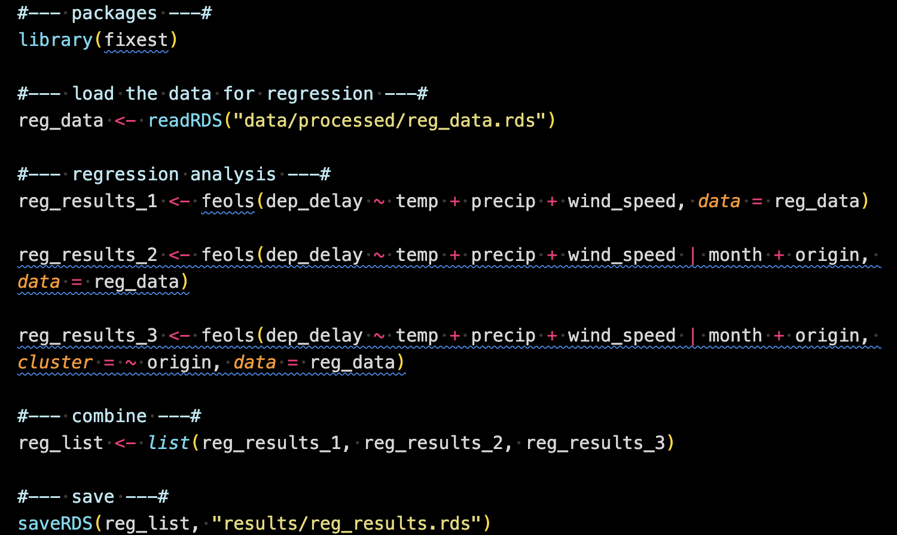
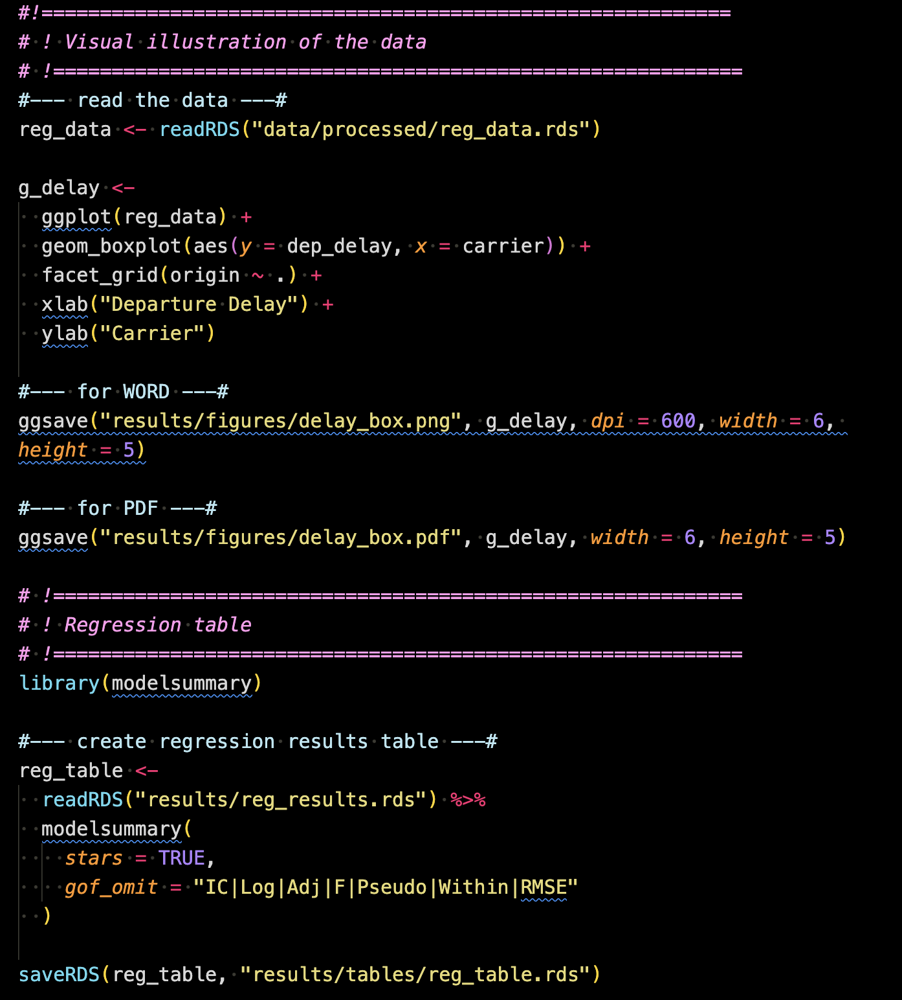
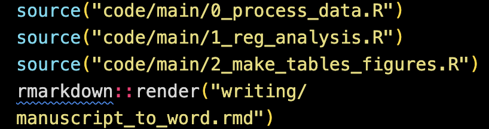

3 Project Development
In this section, we will outline the step-by-step workflow for completing a project, highlighting best practices and pinpointing potential pitfalls to be wary of throughout the process. In this illustration, we assume that we are working with real-world data generated or collected outside of your project. For simulation studies where data is generated, some parts of the flow is not necessary.
The workflow presented here is unrealistically linear and streamlined for a real-world project. In reality, a research project is a long and winding process: you frequently go back and forth between different parts of the research. Consider the organization of files (codes, manuscripts, figures, tables, etc.) presented here as the ideal end state of the project. This organization ensures that the project is both shareable and readily reproducible by others.
3.1 Collect and place datasets
In this illustration, we pretend that we have collected the flights and weather datasets from the nycflights package and they are available as CSV files somewhere.
First thing you do is store these datasets in the data/raw folder. They should never be altered.
Now, it is time to create a metadata file and position it alongside the raw data files inside the data folder. Here is an example of metadata written in a Markdown file format. You have flexibility in choosing the file format, but it should be easily readable. CSV is also a suitable option for a metadata file format.
3.2 Writing R scripts for data wrangling, analysis, and reporting
One of the most important element for a reproducible project is automation by code:
This is critical. Here are some examples of things I (and probably many of you) have done early in my career that I should not do any more.
- Creating tables on WORD or Latex by manually typing numbers in the cells
- Transform (reshape, define new columns, etc) data on Excel
- Run codes on console (not on an R script)
- Load datasets using RStudio UI
- , and many more
All of these can and should be coded in R.
3.2.1 Process datasets
In order to run the intended regression analysis, we need to transform them and combine them to have a regression-compatible dataset. To make this happen, we now create an R file called 0_process_data.R.
Here is what is inside of 0_process_data.R.
In this code, the two datasets are loaded from the data/raw folder (Note that they were loaded, but were not altered in any way in their original files.). They are transformed and then merged. The merged object named reg_data is then saved into data/processed as an RDS (R data set) file.
It is essential to note that the codes above are sufficiently annotated in 0_process_data.R, ensuring that anyone can readily understand the purpose of each code segment (In cases involving more complex operations than those observed here, it may be necessary to provide more detailed annotations). The use of the dplyr package helps in this regard, as its functions are highly expressive about their functions1.
3.2.2 Run analysis
Now that we have an analysis-ready dataset, we will run regression analysis using the dataset. This analysis is written in 1_reg_analysis.R.

This code reads reg_data.rds (created in 0_process_data.R) run three regressions and then combine them into a list called reg_list, which is then saved as an RDS file (named reg_results.rds) in the results folder.
3.2.3 Create tables and figures
Once the analysis is done, you typically communicate them using either tables or figures. For this purpose, 2_make_tables_figures.R was created inside the code/main folder.

This code creates a figure of the distribution of departure delay (dep_delay) by carrier faceted by origin using the ggplot2 package. This is then saved as a pdf (png for WORD because Rmarkdown-WORD cannot include pdf images) into results/figures so that it can be imported inside the rmarkdown/quarto manuscript file.
It also creates a table presenting the three regressions results (created in 1_reg_analysis.R) using the modelsummary package. The table was then saved as an RDS file into results/tables, which can be then read inside the rmarkdown/quarto manuscript file.
After running the code, the results folder looks like this.
3.3 Manuscript writing
We now have enough to start writing a manuscript. We intend to submit this to a journal that accepts WORD as the only format. So, we will use the Rmarkdown-WORD system (See section Chapter 6 for the detailed treatment of this subject. Section Chapter 8 presents how to use Quarto to produce a manuscript in PDF.). In the writing folder, manuscript_to_word.rmd was created.
Inside the manuscript_to_word.rmd file, you write narratives just like you would on WORD. But, you can include the figure and table we just created.
Figure
The portion of the rmd file below imports the figure created in 2_make_tables_figures.R using the knitr::include_graphics() (a function to include external figures).
In the output WORD file, this would look like this:
Tables
The following code first read reg_data and then create a summary statistics table using modelsummary::datasummary().
The resulting table looks like below in the output WORD document.
The following code block was also included in the Rmarkdown file to create a regression results table.
This code first read the regression results saved as a list (created in code/main/1_reg_analysis.R), and the create a regression table using modelsummary().
Its output is printed in the output WORD document like below:
You could alternatively create this table inside code/main/2_make_tables_figures.R, save it as an RDS file and then just import it here. Indeed, where you want to create tables (or figures) inside the manuscript or outside is up to you. You can put all the codes inside the rmd file.
3.4 Reproducing the manuscript
This manuscript is completely reproducible in a fully automated manner (of course including all the results, tables, and figures) given the raw datasets. Here is the R code in an R file (named reproduce.R) that runs everything: from data processing to producing the manuscript.

README file